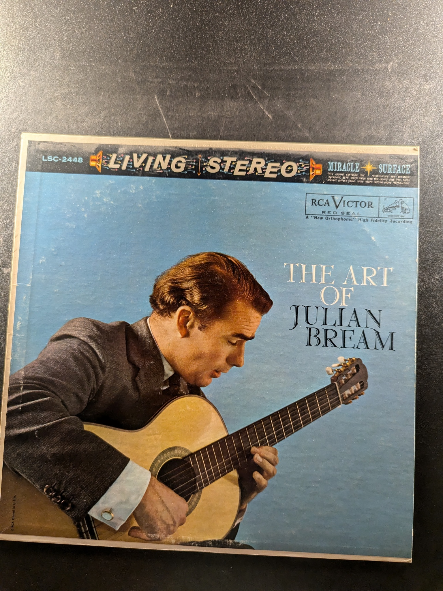

Bach: Chaconne
Andrés Segovia
Decca DL 79751
Granada
Segovia
Decca Gold Label Records DL 710063
music for the guitar
Segovia
Decca DL 710046
Five Pieces from 'Platero and I'
Segovia
Decca DL 710054
Maestro Segovia
Segovia
Decca Records DL 710,039
Encores
Julian Bream
RCA Victor SQN 7779
Julian Bream in Concert
Julian Bream
RCA Victor Red Seal LSC-2819
Julian Bream Plays Villa-Lobos
Julian Bream
RCA Red Seal LSC-3231
Julian & John
John Williams and Julian Bream
RCA Red Seal LSC-3257
Segovia On Stage
Segovia
Decca Gold Label Records DL 710140
The Unique Art of Andrés Segovia
Andrés Segovia
Decca Gold Label Series DL 710164
20th Century Guitar
Julian Bream
RCA Victor Red Seal LSC-2964
Villa-Lobos: The Twelve Etudes for Guitar, Suite populaire brésilienne
Julian Bream
RCA Red Seal ARL1-2499
A Program for the Guitar
Julian Bream
Westminster W-9028
Virtuoso Music for Guitar
John Williams
Columbia MS 6567
Spanish Guitar Music
Julian Bream
Westminster Hi-Fi XWN 18135
Musik für Laute III. Spanien
Konrad Ragossnig
Archiv Produktion 2533 183
The Woods So Wild
Julian Bream
RCA Red Seal LSC-3337
Musik für Laute: VI. Frankreich - France - La France
Konrad Ragossnig
Archiv Produktion 2533 304
Concertos for Lute & Orchestra
Julian Bream
70s
Julian Bream
RCA Red Seal
The Art of Julian Bream
Julian Bream
RCA Victor LSC-2448
Sor Grand Sonata Op. 25 / Giuliani Le Rossiniane (First Recording)
Julian Bream
RCA Red Seal ARL1-0711

Classic Guitar
Julian Bream
RCA Red Seal LSC-3070
Elizabethan Music
The Julian Bream Consort
RCA Red Seal LSC-3185
{kind=link}
{kind=link}
{kind=link}
{kind=link}
{kind=link}
{kind=link}
{kind=link}
{kind=link}
{kind=link}
{kind=link}
{kind=link}
{kind=link}
{kind=link}
{kind=link}
{kind=link}
{kind=link}
{kind=link}
{kind=link}
{kind=link}
{kind=link}
{kind=link}
{kind=link}
{kind=link}
{kind=link}